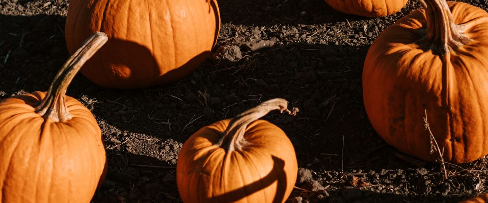

When to plant pumpkins in Moses Lake, WA
Plant pumpkins in the garden in Moses Lake May 1–22, either as seeds or as young plants started indoors Apr 3–10.
- Difficulty
- Moderate
- Sun
- Full sun
- Spacing
- 4 to 6 feet apart in hills; giant types need 15 feet or more
- Planting depth
- 1 inch deep
- Frost
- Killed by frost
- First harvest
- About 105 days after planting
Why these dates
Moses Lake's typical last spring frost is April 27. Frost kills pumpkins, so planting starts once frost risk drops, around May 1. A late frost is still possible until about May 11 (that's when frost is over in 9 years out of 10), so keep row cover or a frost blanket handy for the first couple of weeks.
Columbia Basin and low eastern valleys. Hot, dry summers and quick spring warm-up. Warm crops go in earlier than west of the Cascades, and irrigation matters more than rain.
How to grow pumpkins in Moses Lake
- Start seeds indoors Apr 3–10 in trays or small pots under a grow light or in your sunniest window. Or skip this step and buy young plants (starts) at a garden center.
- Harden off the young plants: about a week before planting, set them outside for a few hours a day, a little longer each day.
- Plant them in the garden May 1–22, 4 to 6 feet apart in hills; giant types need 15 feet or more. If you plant seeds instead, sow them 1 inch deep.
- Water deeply once or twice a week rather than a little every day, and mulch once the soil is warm.
- Harvest: Cut pumpkins when the rind is fully colored and too hard to dent with a fingernail, leaving 3 to 4 inches of stem. Bring them in before a hard frost.
Key numbers
- 70–90°FSoil to sprout
- 90–120Days to harvest
- 25–50 sq ftSpace per plant
- Powdery mildewBiggest risk
Top care tip: Water deeply at the base and slip a board or straw under each pumpkin to keep it off damp soil.
Growing notes
What makes the difference in Northwest gardens, in plain language.
Timing for Halloween
Most carving pumpkins need 90 to 110 days from planting to ripe. Count back from early October: in most of the Northwest that means plants should be in the ground by late May or early June. Starting them indoors three to four weeks early gives you a head start in cool springs. Pumpkins that ripen in September keep fine in a cool, dry spot until Halloween.
Space, feeding and pollination
Pumpkin vines run 10 to 20 feet. Give each plant a hill of soil mixed with plenty of compost, and let the vines sprawl, or grow small pie types on a sturdy fence. They're heavy feeders and need deep watering once or twice a week, especially once fruit starts to swell.
Each plant has separate male and female flowers. Bees move the pollen; if young fruits shrivel, pollination failed. You can help by brushing pollen from a male flower onto the center of a female one (the one with a tiny pumpkin behind it) in the morning.
Ripening and curing
A ripe pumpkin is fully colored, has a hard rind and sounds hollow when tapped. Cut it with a few inches of stem, never carry it by the stem, and cure it somewhere warm for about a week to harden the skin. Bring them in before a hard frost, which damages the rind and shortens storage.
Common questions
When is the last frost in Moses Lake, WA?
Typically April 27. In 9 years out of 10, frost is over by May 11. These are 1991–2020 NOAA climate normals for Moses Lake Grant County Airport.
Is it too late to plant pumpkins in Moses Lake?
The spring planting window runs through May 22. Later plantings may not have time to produce before the first fall frost, which usually arrives around October 8.
When should I start pumpkins from seed indoors in Moses Lake?
April 3 to April 10, which is 4 to 3 weeks before the May 1 planting date. Or buy young plants at a garden center instead.
When should I plant pumpkins for Halloween?
Late May to early June for most varieties. Check the days to maturity on the seed packet and count back from early October.
Why are my baby pumpkins turning yellow and falling off?
They weren't pollinated. It's common early in the season or in cool, rainy weather when bees are scarce. Later fruits usually set fine, or hand-pollinate in the morning.
Can I grow a giant pumpkin here?
Yes, but it needs a long season, a sunny spot of several hundred square feet, rich soil and lots of water. Start indoors and plant out as soon as it's warm.
Also plant in Moses Lake around the same time
Planting dates for pumpkins in nearby areas
- Yakima, WA May 8–29
- Tri-Cities (Pasco, Kennewick, Richland), WA May 1–22
- Walla Walla, WA May 1–22
- Ellensburg, WA May 20 – Jun 10
- Ephrata and Quincy, WA May 1–22
- Sunnyside, Grandview and Prosser, WA May 1–22
Full planting calendar for Moses Lake · Pumpkins in every city